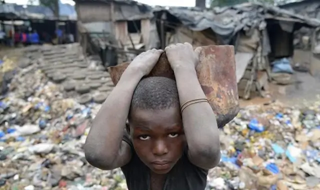
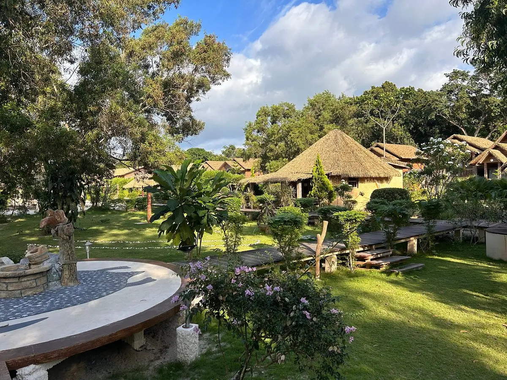
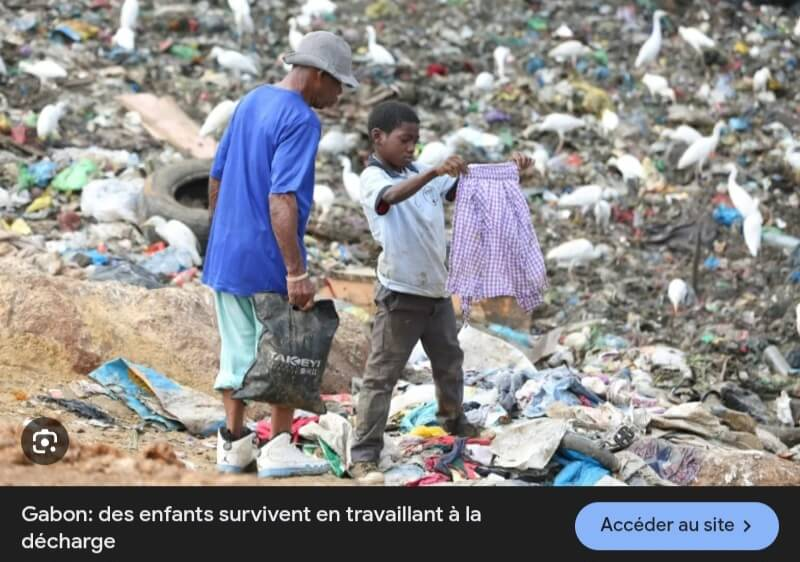

👥Inégalités sociales élevées








Une petite partie de la population (élites, hauts fonctionnaires, grandes entreprises) capte une grande part des richesses.
Pendant ce temps, beaucoup de Gabonais ont unaccès limité à l’emploi, aux soins et à une l’éducation de qualité.
Cela crée un écart très important entre riches et pauvres.
Observations:
Le Gabon est un pays riche en ressources naturelles comme le pétrole, le bois et les minerais, exploitées depuis près d’un siècle. Pourtant, une grande partie de sa population vit encore dans la précarité.
Cette situation s’explique par plusieurs facteurs historiques, économiques et politiques.
Tout d’abord, l’histoire coloniale a fortement influencé l’économie du pays. Sous la domination de la France, les ressources du Gabon étaient principalement exploitées pour enrichir la métropole, sans réel développement local.
Après l’indépendance, cette organisation économique a perduré, avec une économie toujours tournée vers l’exportation de matières premières brutes.
Ensuite, les richesses du Gabon sont concentrées entre les mains d’une minorité. Une élite politique et économique capte une grande partie des revenus, notamment sous des régimes comme celui de Omar Bongo.
Cette mauvaise répartition empêche une redistribution équitable des richesses vers l’ensemble de la population.
De plus, la corruption et la mauvaise gestion des fonds publics limitent les investissements dans les services essentiels. Une partie importante des revenus issus du pétrole n’est pas utilisée pour améliorer les conditions de vie des citoyens, ce qui freine le développement du pays.
Par ailleurs, les secteurs dominants comme le pétrole et les mines créent peu d’emplois, car ils sont très mécanisés. Cela entraîne un chômage élevé, notamment chez les jeunes, et limite les opportunités économiques pour la population.
Aussi, le développement est inégal selon les régions. Les grandes villes comme Libreville concentrent la majorité des infrastructures et des investissements, tandis que les zones rurales restent peu développées.
Conséquences:
la précarité persistante au Gabon ne s’explique pas par un manque de richesses, mais par une mauvaise gestion, une forte inégalité dans leur répartition et un modèle économique peu créateur d’emplois.
Quelques solutions:
Pour améliorer la situation, il serait nécessaire de mieux redistribuer les revenus, de diversifier l’économie et d’investir davantage dans le développement social.